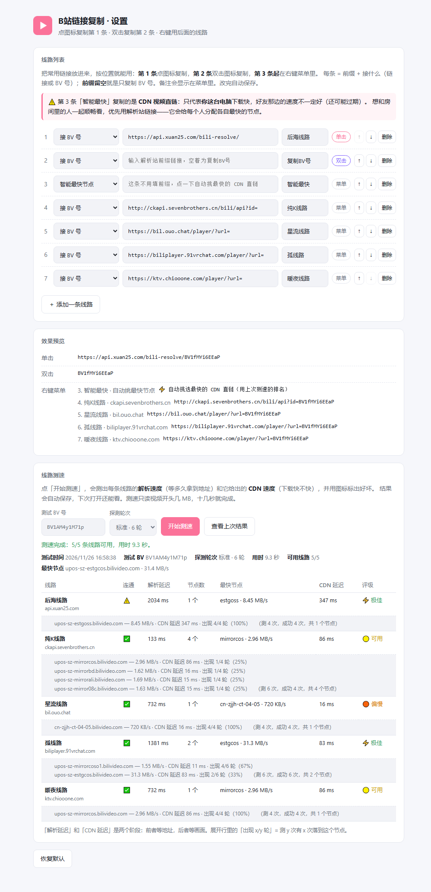

B站链接复制（解析线路 / BV号）
单击用第 1 条线路 · 双击用第 2 条 · 右键用后面的线路
这是什么
在 B 站看视频时，经常需要把链接发给别人、或贴到 VRChat 等播放器里。这个扩展把这件事变成一次点击： 复制 BV 号、解析站链接，或者根据测速结果自动挑出来的 最快 CDN 直链。
线路可以自己配（最多 20 条），每条 = 前缀 + 接「有效链接」或「BV 号」；前缀留空就只复制 BV 号，所以「复制 BV 号」不需要单独的功能。

功能
| 能力 | 说明 |
|---|---|
| 三种复制方式 | 单击图标 = 第 1 条；双击 = 第 2 条；右键菜单 = 第 3 条起（备注直接显示成菜单项） |
| 线路测速 | 连通性、解析延迟、解析出来的每个 CDN 节点（含出现概率）、CDN 延迟与下载速率，用图标标好坏，结果自动保存 |
| 智能最快 | 按上次测速排名自动取最快的 CDN 直链：同族节点直接换签名 host，省掉反复解析 |
| 页面按钮 | B 站视频页右下角浮动「复制链接」，等同点一下图标 |
| 链接形态 | 普通视频 / 分 P / 番剧 / 列表页 / 直播间，自动识别 BV 号、ep 号、房间号 |
提醒：直链只代表你这台电脑下载快，好友那边不一定快；想和房间里的人一起顺畅看，优先用解析站链接——它会按每个人的网络分配各自最快的节点。
安装（开发者模式）
1. 下载 Releases 里的 zip 并解压（或 git clone 本仓库）
2. 打开 edge://extensions （Chrome 用 chrome://extensions）
3. 打开「开发人员模式」
4. 点「加载解压缩的扩展」，选择含 manifest.json 的目录Edge 插件商店 / Chrome 网上应用店上架中，通过后可直接安装。 仓库：github.com/bluemoon23333/bilibili-link-copier
隐私
扩展不收集、不上传、不出售任何个人数据；没有自有服务器，也没有统计。 字符串拼接、配置保存、剪贴板写入全部在本机完成，只有你主动点线路或测速时才会直连对应的解析站与 B 站 CDN。